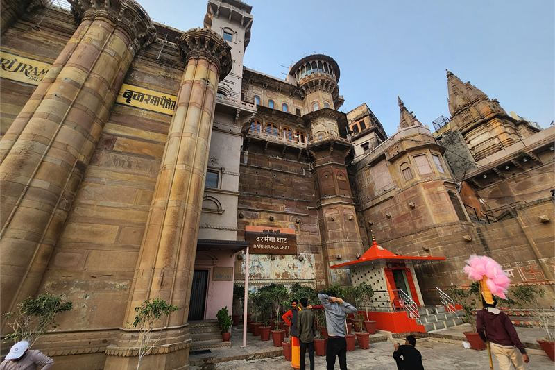
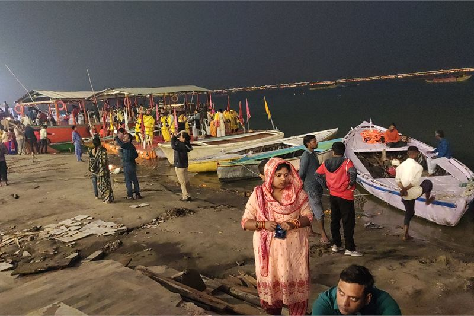

How these hotels were researched
▼- Rates: compared across more than one booking platform on the same day, quoted as a range with the month checked. Not a quote, and they move.
- Guest reviews in bulk: looking for complaints that repeat across many months, not single bad nights.
- Location: checked against a map, measured to the thing you actually came for.
- Real cost of entry: taxes, compulsory meal plans, transfers, and what is not included in the headline rate.
- What I could not confirm is said plainly in the text rather than filled in.
Staying on the ghats in Varanasi is one of those decisions that sounds obvious and turns out to have a condition attached. The condition is that most of the riverfront is not reachable by car.
The old city behind the ghats is a network of lanes, many of them too narrow for a vehicle, some too narrow for two people to pass comfortably. So a hotel described as being on the river usually means one of two things. Either you walk in from the nearest drivable point with your luggage, ten to twenty minutes through the lanes, or the hotel collects you by boat.
Neither is a problem if you know in advance. Both are a genuine shock at eleven at night after a delayed train. Rates below are indicative and were checked in July 2026.
BrijRama Palace

The building dates to the 1810s and was restored and opened as a hotel in the last decade. It rises straight up from Darbhanga Ghat, so from the water it is one of the more striking facades on the riverfront.
You arrive by boat. The hotel runs the transfer from a jetty and there is a lift inside the building up from the water level, which is unusual on this stretch and is a real practical advantage over the places where you climb the ghat steps.
What it is genuinely good for is the morning. Being on the ghats means you can be out at the river at half past five without arranging anything, and the hour after sunrise is when Varanasi is worth the trip. Guests staying further out spend that hour in a taxi.
The honest problems. Rooms vary considerably because it is a converted 200-year-old building, and river-facing is a significant premium over the courtyard-facing rooms, which have no view at all. Sound carries across the water, and the ghats are not quiet at any hour: boats, bells, amplified ceremony in the evening, and the cremation ghats a short distance along the river operating continuously. Some visitors find this overwhelming rather than atmospheric, and it is worth being honest with yourself about which you are before booking a room facing it.
| Indicative rate | Around Rs 20,000 upward, with a clear premium for river-facing |
|---|---|
| Rates checked | July 2026 |
| Building | Early 19th century, restored |
| Access | By hotel boat, with a lift up from water level |
| Rooms | Vary a lot; courtyard rooms have no river view |
| Best for | Being on the river at sunrise without a commute |
In its favour
- Directly on the ghats, so sunrise on the river costs you no travel time
- Lift from the water level, which most ghat properties do not have
- Arrival by boat is a much better introduction to the city than a car park
Worth knowing first
- No road access, which complicates early departures and heavy luggage
- Courtyard rooms cost a lot for a heritage building with no view
- Noise from the river runs late and starts early
- I could not confirm how the hotel handles boat transfers when the river is in flood during a heavy monsoon
The cantonment alternative

Worth stating plainly, because the ghat hotels dominate the search results and they are not right for everyone.
The cantonment area north of the old city has conventional hotels with car access, lifts, reliable power and rooms starting around Rs 4,000 to Rs 12,000. You give up the location. You gain the ability to arrive at midnight with a suitcase, and to leave for a 6am flight without negotiating a boat and a lane in the dark.
The trade is roughly twenty to thirty minutes each way to the ghats, and that is the real cost, because it applies to the sunrise trip as well. If you are in Varanasi for two nights and the river at dawn is the point, stay on the ghats and put up with the inconvenience. If you are here for four nights, travelling with family or older relatives, or arriving late, the cantonment is the sensible call and nobody should feel they have compromised.
| Indicative rate | Roughly Rs 4,000 to Rs 12,000 for solid mid-range options |
|---|---|
| Rates checked | July 2026 |
| Access | Full road access and parking |
| To the ghats | 20 to 30 minutes each way |
| Best for | Late arrivals, early flights, families, longer stays |
What it costs to actually get there
Varanasi's Lal Bahadur Shastri International Airport (VNS) sits 25 km from the ghats. A prepaid taxi from the airport to the Godowlia crossing (the closest drop-off point for central ghats) costs roughly Rs 900 to Rs 1,100 and takes over an hour due to dense city traffic.
If you are arriving at Varanasi Junction (Cantt) railway station, an auto-rickshaw to Godowlia costs around Rs 150 to Rs 200. Crucially, motorized vehicles cannot enter the narrow lanes leading down to the river. If your hotel does not provide a boat pickup from an accessible jetty, you will need to pay a local porter (Rs 100 to Rs 200) to carry your heavy luggage through the winding, often crowded and uneven alleyways to your hotel door.
When to go, and what changes
The rhythm of Varanasi changes dramatically with the seasons. From late June to September, the monsoon causes the Ganges to rise dangerously high. Most lower ghat steps become fully submerged, and local authorities frequently ban all boat operations for weeks at a time. If you visit during this period, you will lose the signature dawn boat ride experience entirely.
Winter (November to February) is the peak season, offering cool walking weather and spectacular morning mist on the river. However, during major festivals like Dev Deepawali in November, the ghats draw millions of pilgrims. Room rates at properties like BrijRama Palace triple, and finding walking space on the steps requires significant effort.
Getting the sunrise right
The reason to be on the ghats is the boat at dawn, so it is worth doing properly. Be on the water before first light rather than at it. Rowed boats are quieter and better than motorboats for this and cost less. Prices are negotiable and the first number quoted at the steps is not the price.
The evening Ganga Aarti at Dashashwamedh Ghat is the other set piece. It is crowded. If you want to see it without being in the crush, watch from a boat rather than the steps.
Practical notes
- Varanasi Junction and the airport are both well outside the old city. Confirm with your hotel exactly where a car can drop you and how far the walk is from there.
- Ask specifically whether your room faces the river, a courtyard or a lane. The difference in experience is much larger than the difference in the photographs.
- Photography near the cremation ghats is not acceptable. This is not a viewpoint.
- The river rises substantially in the monsoon and lower ghat steps go under water. Boat operations and access can change at short notice between roughly July and September.